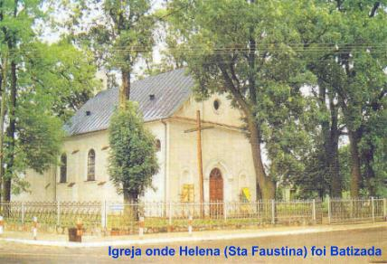
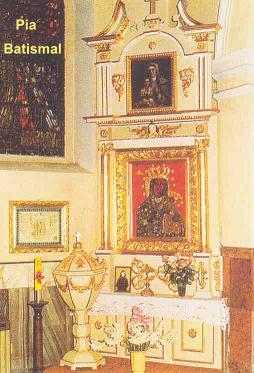
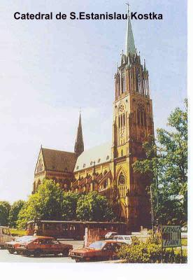
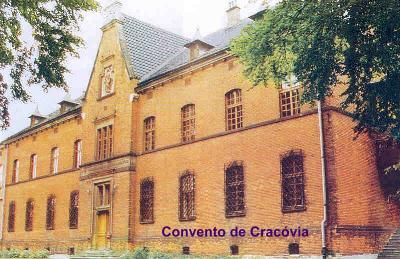
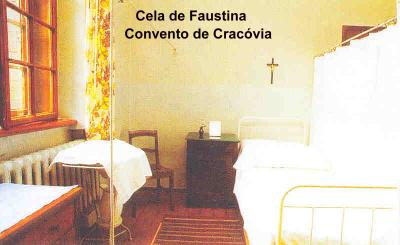

PRIMEIROS TEMPOS
A Irmã Faustina nasceu na aldeia de Glogowiec, distrito de Turek, pertencente à Prefeitura Municipal de Poznan (atualmente distrito de Wielkopolskie), na Polônia, no dia 25 de Agosto de 1905. A Polônia naquela ocasião estava sob o domínio da Rússia. Seus pais eram Estanislau Kowalska e Mariana Babel, e, ela era à terceira de dez (10) filhos do casal. Os pais possuíam uma pequena propriedade agrícola com 5 hectares de terra e somente três (3) vacas.
Dois dias após o nascimento
a menina foi batizada, em Swinice Warckie, na Igreja dedicada a São 
A casa de seus pais era muito simples, com paredes de pedra e poucos móveis. Havia duas divisões com alvenaria de pedra, separadas por um corredor. O pavimento era de terra batida e as paredes não eram rebocadas nem caiadas. A mãe fazia queijo com grande perfeição e vendia leite e queijo, para sustento da família. O pai trabalhava nas terras, preparando o pasto, ajeitando as cercas, plantando e colhendo verduras, milho, trigo e batata, para o consumo e também para a venda. Todas as noites rezavam o Terço de NOSSA SENHORA e agradeciam a DEUS os bens que possuíam e a harmonia em que viviam.
O senhor Estanislau, embora
trabalhando como lavrador era também um excelente carpinteiro, que além do labor
em sua propriedade, realizava serviços para quem o contratasse. Era um homem
religioso e repleto de piedade. Frequentava sempre as Missas aos Domingos
e com sua voz grossa 
Era muito exigente com os filhos, e por isso mesmo, Helena desde os 9 anos de idade, aprendeu a ajudar nos serviços da casa, debulhando o trigo, levando as vacas para o pasto e ajudando na cozinha. A mãe era uma boa mulher, muito dedicada e trabalhadora, particularmente sensível com os pobres. Assim se foi moldando o caráter de Helena pelo exemplo diário e edificante de seus pais.
CHAMADO E VOCAÇÃO
A vida espiritual de Helena começou cedo. Desde tenra idade já percorria a via da santidade. Mais tarde, recordava: "Desde a minha infância desejei tornar-me uma grande santa". Em seu Diário escreveu: “Quando tinha sete anos de idade ouvi pela primeira vez a voz de DEUS na minha alma”. Depois da preparação catequética feita pelo Pároco, Padre Romano Pawlowski, em 1914, com 9 anos de idade, ela recebeu a Primeira Comunhão, momento que marcou indelevelmente a sua existência: “Eu estou contente porque JESUS veio ter comigo e agora posso caminhar com ELE”. A oração se tornou mais assídua e fervorosa, testemunhada pela mãe que a encontrou várias vezes rezando ajoelhada ao chão, principalmente à noite. Helena lhe explicava: “tenho a certeza de que pela manhã é o meu Anjo da Guarda que me acorda”.
Mas os pais não aceitavam facilmente a vocação da filha. Em 1920 e em 1922 a jovem lhes pediu reiteradas permissões para entrar no Convento, mas os pais as recusaram formalmente. Eles não possuíam recursos para lhe dar o dote necessário, porque estavam mergulhados em dívidas e, acima de tudo, porque eram muito ligados à filha e não queriam sentir a ausência dela. Neste período, com 16 anos de idade, em 1921, recebeu o sacramento da Crisma, em Aleksandrów. De modo especial a adolescente escutava com atenção as homilias dominicais, inclusive as repetia em casa durante a semana, e também a leitura da Bíblia que diariamente à noite, era feita pelo seu pai, que mantinha na residência alguns livros úteis.
Com dificuldade Helena iniciou os seus estudos na escola primária em 1917, com 12 anos de idade, por que as Escolas estavam fechadas pela ocupação russa. Não teve uma sólida instrução, só cursou o primeiro e o segundo ano primário completo e a metade do terceiro ano, quando foi obrigada a interrompê-lo a fim de poder trabalhar. Com 16 anos de idade disse à mãe: “Papai trabalha muito e eu não tenho nem roupa para me vestir aos domingos. Irei trabalhar para ganhar alguma coisa e também ajudar nas despesas da casa”. Deixou a residência familiar e foi trabalhar como empregada doméstica na casa de família conhecida, os Bryzewski, em Alexandrów, perto de Lodz. Em 1922, voltou à morada paterna e insistiu que desejava entrar num Convento, mas os pais não concordaram. No outono deste mesmo ano foi trabalhar numa Loja de Marcjanna Sadowska em Lodz, e lá permaneceu até Julho de 1924.
Por outro
lado, o desejo de se consagrar totalmente a DEUS lhe acompanhava diariamente,
mas, 
DEUS, porém, tinha outros planos para ela. É assim que, um dia participando de um baile com sua irmã e uma amiga, teve uma visão de CRISTO Sofredor que diante dela, lhe perguntou: “Até quando hei de ter paciência contigo e até quando tu Me desiludirás?” (Diário parágrafo 9 – página 22). Impressionada com o aspecto e as palavras do SENHOR, perturbou-se e sentou à mesa onde se encontrava sua irmã. Depois de algum tempo, sem que a sua irmã e a amiga (Lucina Strzelecka, mais tarde Irmã Julita, Congregação das Irmãs Ursulinas) percebessem, levantou-se, deixou a festa e entrou na Catedral de Santo Estanislau Kostka, que ficava próxima do local onde estava sendo realizado o baile, e, diante do Santíssimo Sacramento suplicou ao SENHOR que lhe dissesse o que devia fazer. Ela ouviu estas palavras: “Vai imediatamente a Varsóvia, e lá entrarás no Convento”. (Diário parágrafo 10 – página 22)
Terminada a oração, levantou-se e foi para casa, arrumou as coisas indispensáveis, relatou a irmã o que tinha acontecido e com apenas a roupa do corpo, em Julho de 1924, viajou para Varsóvia. Lá chegando, não tendo local para se hospedar, procurou uma Igreja e inspirada pelo SENHOR, conversou com o Padre Jakub Dobrowski (Pároco da Igreja de São Tiago), contou-lhe os fatos que aconteceram e ele lhe indicou a casa da senhora Aldona Lipszycowa que era uma pessoa muito piedosa, e que a recebeu amavelmente. Nesta casa permaneceu praticamente durante um ano e um mês, fazendo todos os serviços da casa como empregada doméstica, ganhando o suficiente para um modesto dote e poder entrar num Convento. Durante este período teve tempo para visitar diversas Congregações, objetivando definir a sua vida religiosa.
Foi assim que depois de bater em várias portas, no dia 1º/08/1925 foi acolhida pela Superiora do Convento Lagiewniki da Congregação das Irmãs de Nossa Senhora da Misericórdia. Ela escreveu: “Sentia-me imensamente feliz, parecia que havia entrado no Paraíso. O meu coração só era capaz de uma contínua oração de ação de Graças”. (Diário parágrafo 17 - página 23) Entretanto, após algumas semanas, ela foi fortemente tentada a deixar a Comunidade, para entrar em outra onde houvesse mais tempo para a oração. Mas JESUS lhe apareceu completamente coberto de chagas e com os olhos repletos de lágrimas. A Irmã perguntou: “JESUS, quem Vos infligiu tanta dor?” E ELE respondeu: “Tu ME infligirás tamanha dor, se saíres desta Congregação! Chamei-te para este e não para outro lugar e preparei muitas graças para ti. Ela pediu perdão ao SENHOR e nunca mais pensou em sair daquela Congregação. (Diário parágrafo 19 - página 24).
O NOVICIADO
Em 23 de Janeiro de 1926 foi para a Casa do Noviciado em Cracóvia onde no dia 30 de Abril recebeu o nome de Irmã Maria Faustina. Trabalhou e ajudou nas diversas Casas da Congregação, porém esteve mais tempo em Cracóvia, em Plock e Vilna.
A sua simplicidade exterior ocultava o admirável e valioso conteúdo místico de sua alma. Cumpria assiduamente e com pontualidade as suas funções, guardando com zelo vigoroso a Regra religiosa. Sua humildade a mantinha recolhida e silenciosa, embora ao mesmo tempo possuísse atitudes naturais, com absoluta serenidade e amor benevolente, para com o próximo.
A sua existência se concentrava numa efetiva aspiração, que buscava sempre aperfeiçoar, a união cada vez mais ampla, atenciosa e amorosa com DEUS e a uma colaboração efetiva e generosa com JESUS, na obra de salvação das almas. Ela escreveu: “Ó meu JESUS, Vós sabeis que desde os meus mais tenros anos desejava me tornar uma grande santa, isto é, desejava amar-Vos com um amor tão grande que até então nenhuma alma Vos tinha amado”.(Diário parágrafo 1372 – página 353)
A profundidade de sua vida espiritual revela-se de modo transparente no Diário. A leitura atenta dos seus apontamentos oferece uma imagem do alto grau de união da sua alma com DEUS, revelando à grande e permanente comunicação DELE no seu íntimo e os seus esforços, sua vontade decidida e sua luta implacável na busca da perfeição cristã. NOSSO SENHOR concedeu-lhe graças especiais: o dom da contemplação, o profundo conhecimento do Mistério da Misericórdia de DEUS, as visões, as aspirações, os estigmas escondidos, o dom da profecia, de discernimento, e também o dom raramente concedido a outros Santos, dos esponsais místicos.
Extraordinariamente dotada, ela escreveu: “Nem graças, nem aparições, nem êxtases, ou qualquer outro dom que lhe seja concedido torna a alma perfeita, mas sim a sua união íntima com DEUS. A minha santidade e perfeição consistem na união estreita da minha vontade com a Vontade de NOSSO SENHOR”.(Diário parágrafo 1107 – página 297)
Terminado o Noviciado no dia 30 de Abril de 1928, após um Retiro Espiritual de oito (8) dias fez os primeiros Votos temporários diante do senhor Bispo Estanislau Rospond. E em 31 de Outubro foi enviada de retorno a Varsóvia, onde foi destinada aos serviços da cozinha.
Irmã Faustina falou: Certo dia, JESUS me disse que havia de punir uma cidade, que é a mais bela da nossa Pátria (Varsóvia, capital da Polônia). Esse castigo deveria ser o mesmo que DEUS enviou contra Sodoma e Gomorra. Vi a grande ira de DEUS, e um estremecimento atravessou o meu coração. Eu rezava em silêncio. Depois de um momento, JESUS me disse: “Minha filha, une-te estreitamente a MIM durante o Sacrifício e oferece ao PAI CELESTIAL o Meu Sangue e as Minhas Chagas em reparação pelos pecados dessa cidade. Repete isso sem cessar durante toda a Santa Missa. Faz isto durante sete dias”. No sétimo dia vi JESUS numa nuvem brilhante e pedi que ELE olhasse a nossa Cidade e todo o País. E JESUS olhou benignamente. Quando percebi a benevolência DELE, supliquei-LHE a benção. Então JESUS me disse: “Por ti, abençôo todo o País”. E fez um grande sinal da Cruz com a mão sobre a nossa Pátria. Vendo a bondade de DEUS, uma grande alegria inundou a minha alma. (Diário parágrafo 1101 – página 296)

Descreve a Irmã Faustina: Numa ocasião, no Noviciado, quando a Madre Mestra me designou para a cozinha, fiquei imensamente preocupada, porque não podia dar conta das panelas, eram muito grandes. O mais difícil era escoar a água das batatas, algumas vezes, a metade das batatas caíam fora. Quando contei isto a Madre Mestra, respondeu-me que aos poucos me acostumaria e adquiriria prática. Contudo, apesar de meu empenho, essa dificuldade não desaparecia, e por causa de minha doença, minhas forças diminuíam a cada dia. Por essa razão, passei a me esquivar quando era preciso escoar a água das batatas. As Irmãs começaram a perceber que eu me furtava daquele trabalho e ficaram muito admiradas! Ao meio dia, no exame de consciência, queixei-me a DEUS daquela falta de forças. Então ouvi na alma estas palavras: “De hoje em diante farás isso com grande facilidade. Vou proporcionar-lhe a força necessária”. Ao anoitecer quando chegou a hora de despejar a água das batatas, apressei-me em fazer o serviço, confiante nas palavras do SENHOR. Com toda facilidade peguei a panela e derramei a água perfeitamente bem. Mas que surpresa, quando tirei a tampa, para deixar sair o vapor das batatas, ao invés de batatas estava dentro da panela lindos ramalhetes inteiros de rosas vermelhas, tão belas que é difícil descreve-las. Nunca tinha visto rosas assim. Fiquei atônita, sem compreender o seu significado, mas nesse momento ouvi uma voz na minha alma: “Estou transformando o teu trabalho tão pesado em buquês das mais belas flores, e o seu perfume eleva-se até o Meu Trono”. A partir deste dia, procurava tirar a água das batatas não somente durante a minha semana de cozinha, mas também na semana das outras Irmãs, substituindo-as nesse trabalho. Não apenas nesse trabalho, mas em todo trabalho pesado eu procurava ser a primeira a auxiliar, visto que verifiquei quanto isso era agradável a DEUS. (Diário parágrafo 65 – páginas 39/40)
A Irmã descreve outro fato: Num certo dia, vi (por visão interior) duas Irmãs que estavam prestes a entrar no inferno, pela ação que iam praticar. Uma dor indizível oprimiu a minha alma e roguei a DEUS por elas. JESUS me falou: “Vai falar com a Madre Superiora e conta-lhe que essas duas Irmãs estão em ocasião de cometer um grave pecado”. No dia seguinte contei a Madre Superiora e rezei por elas. Como consequência, uma delas se arrependeu com grande fervor e a outra, querendo reagir, estava passando por uma grande e terrível luta interior. (Diário parágrafo 43 – página 32/33)
Nos meses de
Maio e Junho de 1930, Irmã Faustina foi para a Casa da Congregação em Plock,
aonde 
A Irmã escreveu: Rezava diante do Sacrário em nossa pequena Capela, quando JESUS me disse: “Vou deixar esta Casa, visto que há nela coisas que não ME agradam”. E saiu do Sacrário uma Hóstia e pousou em minhas mãos, e eu, com alegria a coloquei novamente no Sacrário. Repetiu isso mais uma vez, e eu fiz a mesma coisa, colocando-a no Sacrário. Mas, repetiu-se pela terceira vez, e então a Hóstia transformou-se em NOSSO SENHOR e JESUS me disse: “Não ficarei aqui por mais tempo”! Na minha alma acendeu-se, de repente, o meu vivo amor a JESUS e disse-LHE: “Eu não Vos deixarei sair desta Casa, JESUS". E o SENHOR desapareceu, ficando a Hóstia em minhas mãos. Uma vez mais a coloquei na Âmbula e fechei o Sacrário. E assim JESUS permaneceu conosco. Procurei durante três dias, fazer uma adoração reparadora. (Diário parágrafo 44 – página 33)
Frequentemente, eu sentia a Paixão do SENHOR no meu corpo, (os estigmas da flagelação e da crucificação, nas mãos, nos pés, no lado, na cabeça e no corpo) embora de forma imperceptível (os estigmas não eram visíveis, mas ela sentia as terríveis dores). Alegrava-me com isso, porque JESUS assim o queria. Mas isso durou pouco tempo. Esses sofrimentos inflamavam a minha alma com o fogo do amor a DEUS e às almas imortais. O amor suporta tudo, o amor venceu a morte, o amor não teme nada... (Diário parágrafo 46 – página 33)